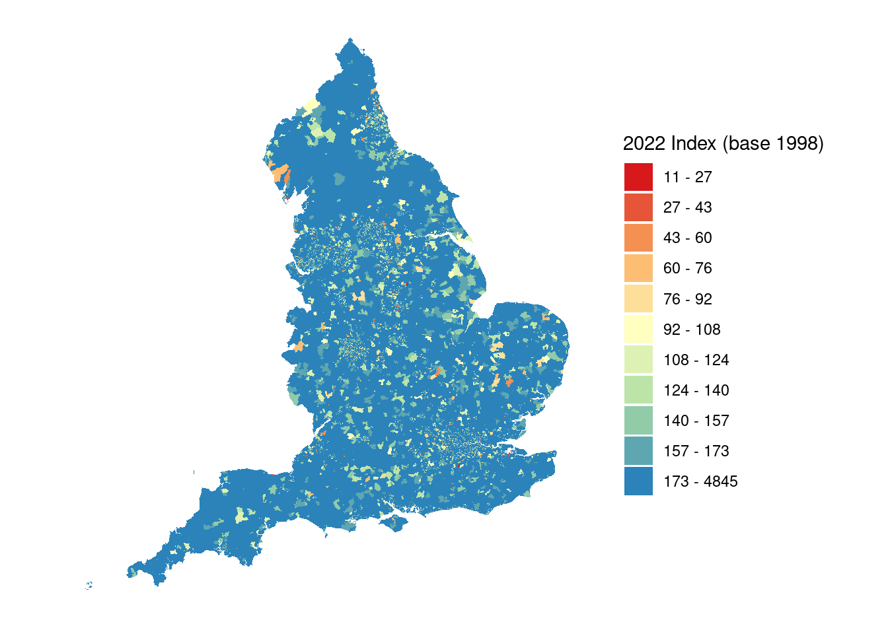
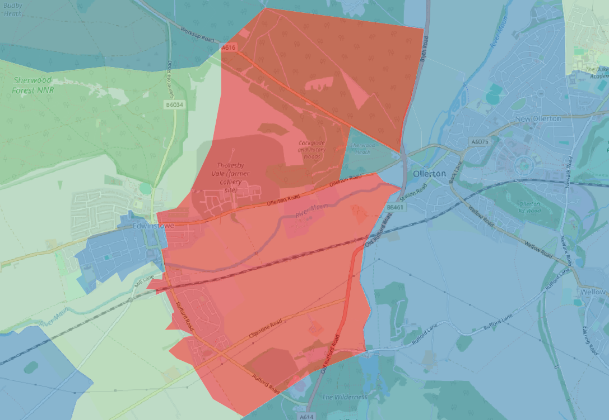
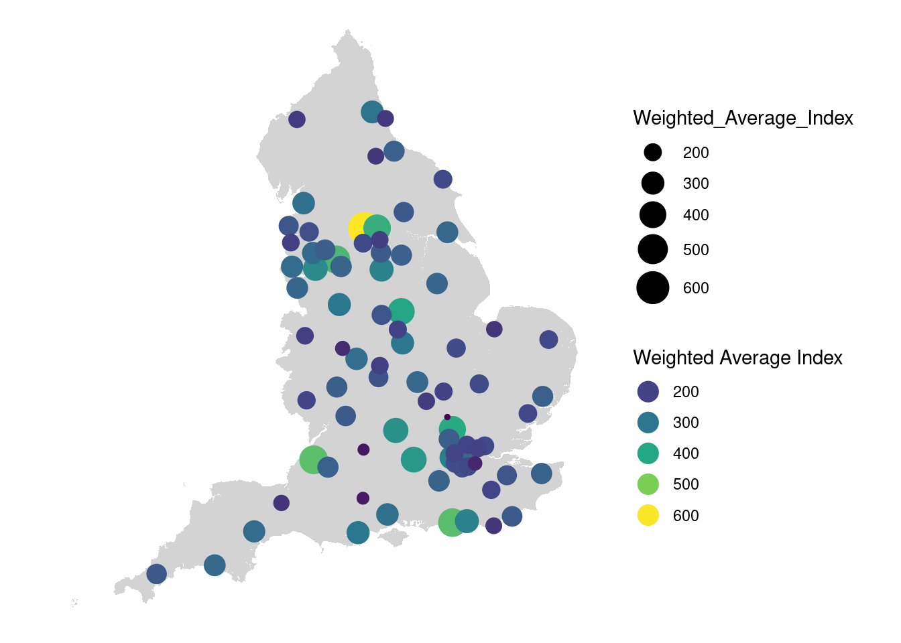

![]()
library(readxl)
library(tidyverse)
library(sf)
library(janitor)
library(magrittr)
library(kableExtra)
library(viridis)
library(httr)Day 30: The Final Map
I am using today as an excuse to look at some new data (to me at least) that popped into my social media feed a month or so back, but I have not had chance to look at them yet.
These concern UK small area gross value added (GVA) estimates - but something that interested me was that there were a lot of caveats when using these data - specifically:
The building blocks statistics are not directly comparable across nations because the levels of composition can vary hugely. This is because some small areas contain mainly (or exclusively) households, and others contain heavy industries.
Further, the building blocks geographies are defined differently, which calls for caution when comparing and/or interpreting the statistics.
The small areas statistics can appear quite volatile, but are more stable when aggregated to form larger geographic areas.
These all sounded like interesting challenges to me!
Exploring the Data
Load packages
This reads the data for England and cleans up the column names.
# URL
url <- "https://www.ons.gov.uk/file?uri=/economy/grossvalueaddedgva/datasets/uksmallareagvaestimates/1998to2022/uksmallareagvaestimates1998to2022.xlsx"
# Download the file to a temporary location
temp_file <- tempfile(fileext = ".xlsx")
GET(url, write_disk(temp_file, overwrite = TRUE))Response [https://www.ons.gov.uk/file?uri=/economy/grossvalueaddedgva/datasets/uksmallareagvaestimates/1998to2022/uksmallareagvaestimates1998to2022.xlsx]
Date: 2024-11-14 10:21
Status: 200
Content-Type: application/vnd.openxmlformats-officedocument.spreadsheetml.sheet;charset=utf-8
Size: 13.9 MB
<ON DISK> /tmp/RtmpvWl2Xb/file28179bc44.xlsx# Read the Excel file
gva <- read_excel(temp_file, sheet = "Table 1", skip = 1) %>% clean_names()
#Subset
gva %<>%
select(lsoa_code,x1998:x2022)We can then create a function to produce an index calibrated against the earliest year of data; in this case 1998.
calculate_index <- function(df) {
# Get the base year (1998) values
base_values <- df %>%
select(x1998) %>%
pull()
df_index <- df %>%
mutate(
across(
starts_with("x"),
~ (.x / base_values) * 100
)
)
return(df_index)
}
gva_index <- calculate_index(gva)Make a Map
First we read in the LSOA polygons and remove unwanted attributes. It is worth noting that the codes supplied on the GVA data are for the 2011 version of the codes! It would be fantastic if the formal code names were used on all government data, as you often have to discover this later when lots of matches fail!
# Download data
lsoa_sf <- st_read("https://services1.arcgis.com/ESMARspQHYMw9BZ9/arcgis/rest/services/LSOA_Dec_2011_Boundaries_Generalised_Clipped_BGC_EW_V3/FeatureServer/0/query?outFields=*&where=1%3D1&f=geojson")Reading layer `OGRGeoJSON' from data source
`https://services1.arcgis.com/ESMARspQHYMw9BZ9/arcgis/rest/services/LSOA_Dec_2011_Boundaries_Generalised_Clipped_BGC_EW_V3/FeatureServer/0/query?outFields=*&where=1%3D1&f=geojson'
using driver `GeoJSON'
Simple feature collection with 34753 features and 11 fields
Geometry type: MULTIPOLYGON
Dimension: XY
Bounding box: xmin: -6.418622 ymin: 49.86474 xmax: 1.763571 ymax: 55.81107
Geodetic CRS: WGS 84# Subset to England and remove unwanted columns
lsoa_sf %<>%
filter(startsWith(LSOA11CD, "E")) %>%
select(LSOA11CD)Next we can Join the GVA to the polygons.
# Join
lsoa_sf %<>%
left_join(gva_index, by = c("LSOA11CD" = "lsoa_code"))Deleting source `output_file.gpkg' using driver `GPKG'
Writing layer `output_file' to data source `output_file.gpkg' using driver `GPKG'
Writing 32844 features with 26 fields and geometry type Multi Polygon.And then create a map.
breaks <- c(-Inf, 27, 43, 60, 76, 92, 108, 124, 140, 157, 173, Inf)
labels <- c("11 - 27", "27 - 43", "43 - 60", "60 - 76",
"76 - 92", "92 - 108", "108 - 124", "124 - 140",
"140 - 157", "157 - 173", "173 - 4845")
# Create a categorized variables
lsoa_sf$category <- cut(lsoa_sf$x2022,
breaks = breaks,
labels = labels,
right = FALSE) # left-inclusive intervals
# Define colors corresponding to each range
colors <- c(
"11 - 27" = "#d7191c",
"27 - 43" = "#e65538",
"43 - 60" = "#f59053",
"60 - 76" = "#fdbe74",
"76 - 92" = "#fedf99",
"92 - 108" = "#ffffbf",
"108 - 124" = "#ddf1b4",
"124 - 140" = "#bce4a9",
"140 - 157" = "#91cba8",
"157 - 173" = "#5ea7b1",
"173 - 4845" = "#2b83ba"
)
# Plot with manual colors
ggplot(data = lsoa_sf) +
geom_sf(aes(fill = category), color = NA) +
scale_fill_manual(values = colors) +
theme_minimal() +
labs(
fill = "2022 Index (base 1998)"
) +
labs(size = "Proximity") + # Change "New Legend Title" to your desired title
coord_sf(crs = st_crs(27700)) +
theme_minimal() +
theme(
axis.text = element_blank(),
axis.ticks = element_blank(),
axis.title = element_blank(),
panel.grid.major = element_blank(),
panel.grid.minor = element_blank())
The patterns are quite noisy, and when you explore some of the more extreme patterns there are clearly areas where these may be statistical anomaly; which follows some of the warnings in how to use these data. However, in some areas this appears to not be the case. The following area shows negative GVA relative to 1998, and is the location of Thoresby Colliery which closed in 2015, so within the comparison period.

GVA and Retail Centres
Next I thought it would be interesting to use the GVA data to explore some aspects of retail. First we import the CDRC Retail Centre definitions. This is all quite rough, so with more time I would do these analysis a little more thoroughly!
# Get retail centres
retail_sf <- st_read("Retail_Boundaries_UK.gpkg")Reading layer `Retail_Boundaries_UK' from data source
`/home/rstudio/alexsingleton.github.io/content/blog/2024-11-30-30DMC_The_Final_Map/Retail_Boundaries_UK.gpkg'
using driver `GPKG'
Simple feature collection with 6423 features and 8 fields
Geometry type: POLYGON
Dimension: XY
Bounding box: xmin: 33363.7 ymin: 10471.87 xmax: 655167.5 ymax: 1142036
Projected CRS: OSGB36 / British National GridThen we use a spatial join to look at the intersection of retail centres and the LSOA.
# Ensure both are in the same coordinate reference system (CRS)
lsoa_sf <- st_transform(lsoa_sf, st_crs(retail_sf))
# Join
points_with_retail <- st_join(retail_sf,lsoa_sf, join =st_intersects)
# Filter to England
points_with_retail %<>% filter(Country=="England")# Perform spatial intersection to get overlapping areas
overlap_sf <- st_intersection(retail_sf, lsoa_sf %>% st_make_valid())
# Calculate the area of the intersected geometries
overlap_sf$overlap_area <- st_area(overlap_sf)We can then analyse the changes in GVA by retail center type to identify which types have experienced the most growth since 1999. Because our classification segments by more traditional types of retail agglomeration and those which are designed to be concentrated, such as within a retail park or shopping centre, these are reflected in the statistics and represent a general evolution in retail since 1999.
overlap_sf %>%
filter(!is.na(Classification)) %>% # Remove rows with NA
group_by(Classification) %>%
summarise(
Weighted_Average_Index = as.numeric(sum(x2022 * overlap_area, na.rm = TRUE) / sum(overlap_area), na.rm = TRUE)
) %>%
arrange(desc(Weighted_Average_Index)) %>%
st_drop_geometry() %>%
kable(align = 'lcc') %>%
kable_styling(bootstrap_options = "responsive", full_width = FALSE)| Classification | Weighted_Average_Index |
|---|---|
| Small Shopping Centre | 652.1828 |
| Regional Centre | 359.3353 |
| Large Shopping Centre | 321.3384 |
| Small Retail Park | 270.9027 |
| Large Retail Park | 252.0647 |
| District Centre | 246.5589 |
| Major Town Centre | 244.6297 |
| Small Local Centre | 243.0592 |
| Town Centre | 237.2312 |
| Local Centre | 236.3928 |
| Market Town | 226.3048 |
We can then have a look at some of these patterns by retail centre. These were restricted to the two largest types of traditional retail centre. Some interesting patterns emerge.
results <- overlap_sf %>%
filter(!is.na(RC_Name)) %>% # Remove rows with NA
filter(Classification %in% c("Regional Centre","Major Town Centre")) %>%
group_by(RC_Name) %>%
summarise(
Weighted_Average_Index = as.numeric(sum(x2022 * overlap_area, na.rm = TRUE) / sum(overlap_area), na.rm = TRUE)
) %>%
arrange(desc(Weighted_Average_Index))
#Display the table
results %>%
st_drop_geometry() %>%
kable(align = 'lcc') %>%
kable_styling(bootstrap_options = "responsive", full_width = F) %>%
scroll_box(height = "300px")| RC_Name | Weighted_Average_Index |
|---|---|
| Bradford; Bradford (Yorkshire and The Humber; England) | 603.7709 |
| Bristol City; Bristol (South West; England) | 458.7708 |
| Worthing; Worthing (South East; England) | 454.0608 |
| Manchester City; Manchester (North West; England) | 439.3316 |
| Leeds City, Leeds (Yorkshire and The Humber; England) | 418.5523 |
| St Albans; St Albans (East of England; England) | 408.0652 |
| Nottingham; Nottingham (East Midlands; England) | 399.1771 |
| London; London (London; England) | 378.7947 |
| Reading; Reading (South East; England) | 370.4064 |
| Oxford; Oxford (South East; England) | 354.4344 |
| Warrington; Warrington (North West; England) | 342.4695 |
| Brighton and Hove; Brighton and Hove (South East; England) | 325.4165 |
| Sheffield City; Sheffield (Yorkshire and The Humber; England) | 324.4665 |
| Hounslow; Hounslow (London; England) | 318.0803 |
| Bournemouth; Bournemouth, Christchurch and Poole (South West; England) | 304.0225 |
| Leicester; Leicester (East Midlands; England) | 302.4936 |
| Stoke; Stoke-on-Trent (West Midlands; England) | 301.3301 |
| Newcastle City; Newcastle upon Tyne (North East; England) | 296.0757 |
| Lancaster; Lancaster (North West; England) | 289.9517 |
| Southampton; Southampton (South East; England) | 287.6918 |
| Birmingham City; Birmingham (West Midlands; England) | 284.9352 |
| Liverpool City; Liverpool (North West; England) | 281.1173 |
| Exeter; Exeter (South West; England) | 280.9092 |
| Wigan; Wigan (North West; England) | 278.9805 |
| Knightsbridge; Kensington and Chelsea (London; England) | 276.0378 |
| Northampton; Northampton (East Midlands; England) | 274.4235 |
| Plymouth; Plymouth (South West; England) | 274.1781 |
| Hull; Kingston upon Hull (Yorkshire and The Humber; England) | 272.6131 |
| Chester; Cheshire West and Chester (North West; England) | 269.3055 |
| Lincoln; Lincoln (East Midlands; England) | 266.6141 |
| Guildford; Guildford (South East; England) | 265.0940 |
| Stockport; Stockport (North West; England) | 264.3075 |
| Canterbury; Canterbury (South East; England) | 261.6701 |
| Bath; Bath and North East Somerset (South West; England) | 258.9825 |
| Doncaster; Doncaster (Yorkshire and The Humber; England) | 257.4575 |
| Ipswich; Ipswich (East of England; England) | 257.2136 |
| Middlesbrough; Middlesbrough (North East; England) | 256.9389 |
| Worcester; Worcester (West Midlands; England) | 256.2160 |
| Watford; Watford (East of England; England) | 253.4625 |
| Bolton; Bolton (North West; England) | 252.8540 |
| Hastings; Hastings (South East; England) | 248.2206 |
| Barnsley; Barnsley (Yorkshire and The Humber; England) | 246.2507 |
| Cheltenham; Cheltenham (South West; England) | 246.2328 |
| Truro; Cornwall (South West; England) | 244.5830 |
| York; York (Yorkshire and The Humber; England) | 242.5009 |
| Derby; Derby (East Midlands; England) | 239.0582 |
| Blackpool; Blackpool (North West; England) | 237.6552 |
| Maidstone; Maidstone (South East; England) | 236.2865 |
| Royal Leamington Spa; Warwick (West Midlands; England) | 233.6452 |
| Sutton; Sutton (London; England) | 225.4427 |
| Preston; Preston (North West; England) | 225.3978 |
| Kingston upon Thames; London (London; England) | 223.7936 |
| Peterborough; Peterborough (East of England; England) | 219.9911 |
| Cambridge; Cambridge (East of England; England) | 219.5252 |
| Romford; London (London; England) | 215.6034 |
| Scarborough; Scarborough (Yorkshire and The Humber; England) | 214.0865 |
| Huddersfield; Kirklees (Yorkshire and The Humber; England) | 213.8794 |
| Norwich; Norwich (East of England; England) | 212.4205 |
| Croydon; London (London; England) | 210.9787 |
| Colchester; Colchester (East of England; England) | 210.7075 |
| Royal Tunbridge Wells; Tunbridge Wells (South East; England) | 206.5099 |
| Hereford; County of Herefordshire (West Midlands; England) | 205.7771 |
| Ealing; Ealing (London; England) | 205.1098 |
| Wood Green; London (London; England) | 204.8174 |
| Loughborough; Charnwood (East Midlands; England) | 201.8812 |
| Bedford; Bedford (East of England; England) | 201.6262 |
| Ilford; London (London; England) | 200.4038 |
| Southport; Sefton (North West; England) | 195.6721 |
| Coventry; Coventry (West Midlands; England) | 195.0813 |
| Shrewsbury; Shropshire (West Midlands; England) | 194.3616 |
| Wakefield; Wakefield (Yorkshire and The Humber; England) | 192.3007 |
| Milton Keynes; Milton Keynes (South East; England) | 191.0835 |
| Carlisle; Carlisle (North West; England) | 188.4729 |
| Sunderland; Sunderland (North East; England) | 183.6281 |
| Darlington; Darlington (North East; England) | 181.8393 |
| Eastbourne; Eastbourne (South East; England) | 181.5299 |
| King's Lynn; King's Lynn and West Norfolk (East of England; England) | 177.0160 |
| Taunton; Somerset West and Taunton (East of England; England) | 174.7752 |
| Wolverhampton; Wolverhampton (West Midlands; England) | 159.6873 |
| Bromley; London (London; England) | 151.8955 |
| Salisbury; Wiltshire (South West; England) | 134.6113 |
| Swindon; Swindon (South West; England) | 127.8705 |
| Luton; Luton (East of England; England) | 104.4664 |
We can also map these index values. My takeaway from these data are that they are potentially very interesting and I suspect after this fairly rough and ready exploration may well make their way into a retail paper over the next couple of months!
# Calculate centroids of the polygons
results$centroid <- st_centroid(results$geom)
# Extract the coordinates of centroids into separate columns
results <- results %>%
mutate(
centroid_x = st_coordinates(centroid)[, 1],
centroid_y = st_coordinates(centroid)[, 2]
)
# Create a ggplot map with a combined legend
ggplot() +
# Plot the polygons
geom_sf(data = lsoa_sf, fill = "lightgray", color = NA) +
# Plot the centroids with combined size and color
geom_point(
data = results,
aes(
x = centroid_x,
y = centroid_y,
size = Weighted_Average_Index,
color = Weighted_Average_Index
)
) +
# Apply a combined scale for color and size with a unified legend
scale_size_continuous(range = c(1, 8)) +
scale_color_viridis_c() +
guides(
color = guide_legend(
title = "Weighted Average Index",
override.aes = list(size = 5)
)
) +
theme_minimal() +
theme(
axis.text = element_blank(),
axis.ticks = element_blank(),
axis.title = element_blank(),
panel.grid.major = element_blank(),
panel.grid.minor = element_blank(),
panel.spacing = unit(0, "mm"),
plot.margin = unit(rep(0, 4), "mm"),
legend.position = "right"
)